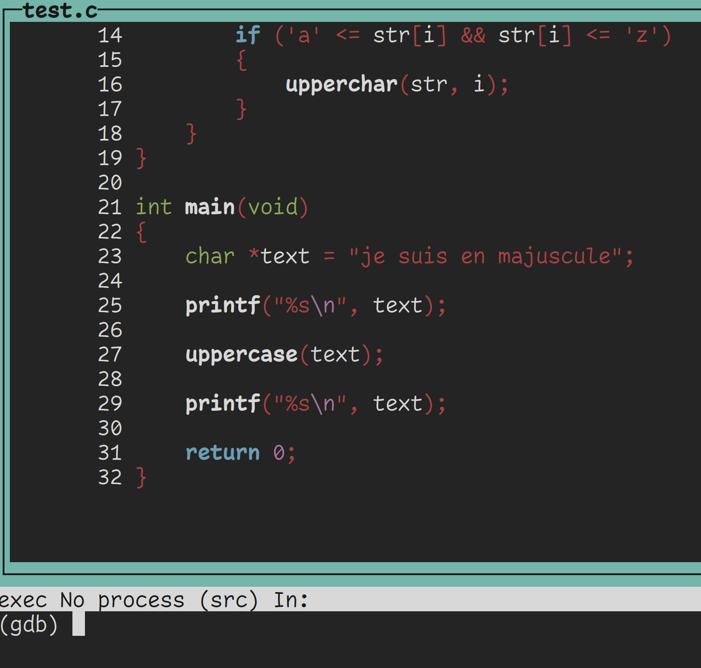
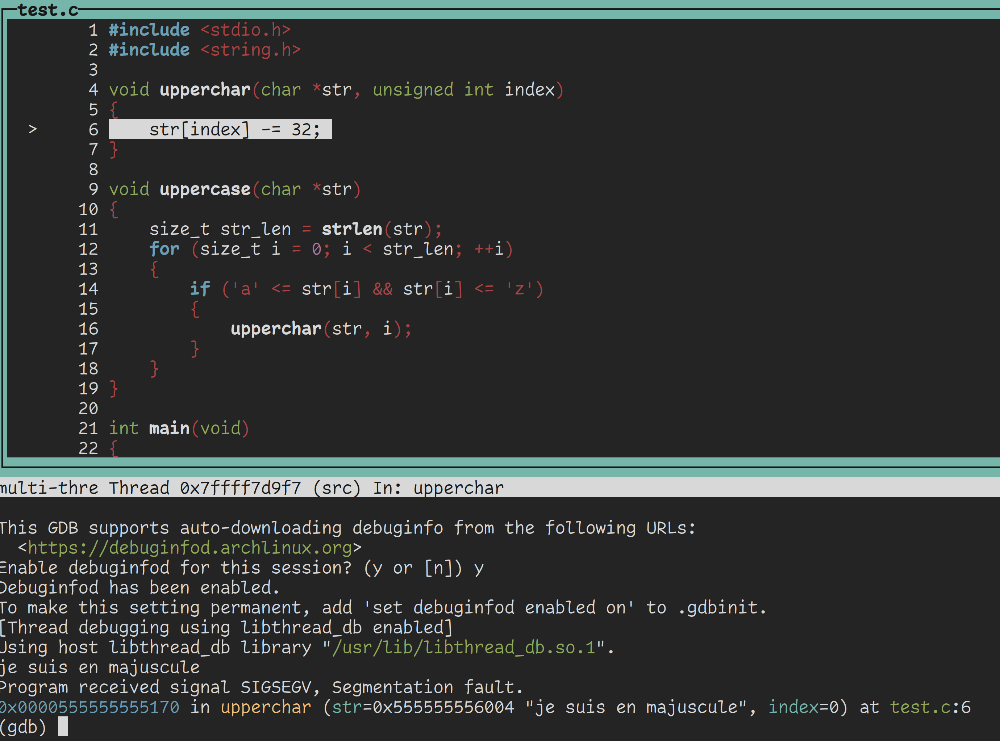
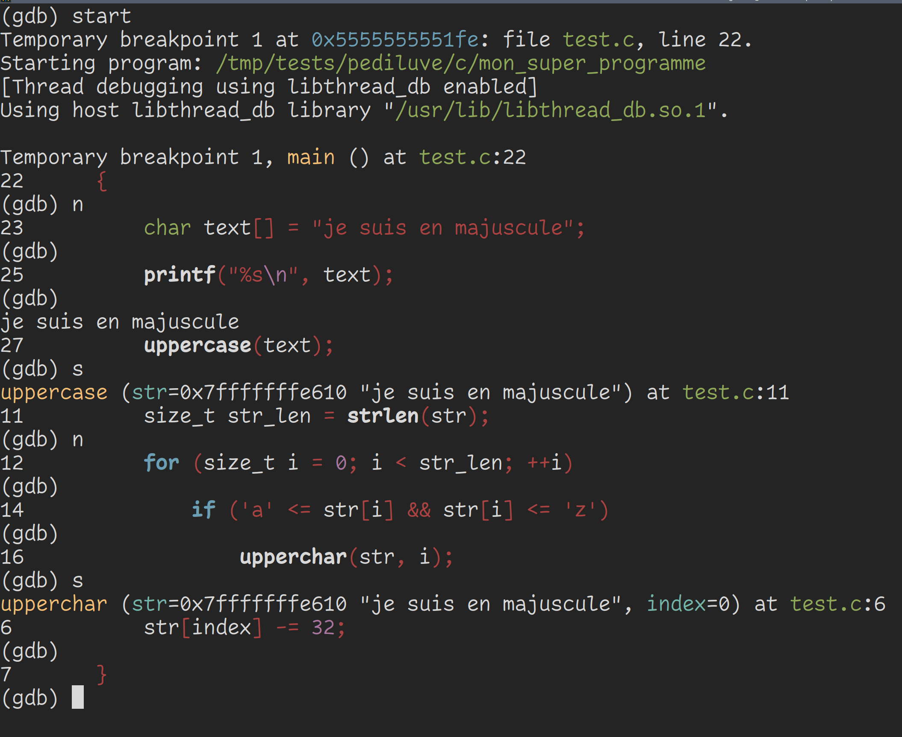

GDB
GDB signifie Gnu DeBugger. C'est un débogueur qui te permet de voir plus en profondeur comment s'exécute ton programme, remonter la trace des bugs, etc.
Je ne vais pas te montrer tout l'envers du décort avec gdb, ça serait beaucoup trop long et ça mériterait un livre complet. Je vais plutôt te montrer quelques commandes de bases qui te seront déjà bien utiles.
Symbole de débug
Si tu veux utiliser GDB, je te conseille de toujours inclure les symboles de débug.
Exemples
Voici le code que l'on va déboguer.
#include <stdio.h>
#include <string.h>
void upperchar(char *str, unsigned int index)
{
str[index] -= 32;
}
void uppercase(char *str)
{
size_t str_len = strlen(str);
for (size_t i = 0; i < str_len; ++i)
{
if ('a' <= str[i] && str[i] <= 'z')
{
upperchar(str, i);
}
}
}
int main(void)
{
char *text = "je suis en majuscule";
printf("%s\n", text);
uppercase(text);
printf("%s\n", text);
return 0;
}
$ ./mon_super_programme
je suis en majuscule
segmentation fault (core dumped) ./mon_super_programme
$
Exécution
$ gcc test.c -g -o mon_super_programme
$
Pour déboguer ton programme, appelle gdb avec le nom de ton exécutable.
$ gdb mon_super_programme
GNU gdb (GDB) 15.1
Copyright (C) 2024 Free Software Foundation, Inc.
License GPLv3+: GNU GPL version 3 or later <http://gnu.org/licenses/gpl.html>
This is free software: you are free to change and redistribute it.
There is NO WARRANTY, to the extent permitted by law.
Type "show copying" and "show warranty" for details.
This GDB was configured as "x86_64-pc-linux-gnu".
Type "show configuration" for configuration details.
For bug reporting instructions, please see:
<https://www.gnu.org/software/gdb/bugs/>.
Find the GDB manual and other documentation resources online at:
<http://www.gnu.org/software/gdb/documentation/>.
For help, type "help".
Type "apropos word" to search for commands related to "word"...
/home/gelules/.config/gdb/gdbinit:1: Error in sourced command file:
No symbol table is loaded. Use the "file" command.
Reading symbols from mon_super_programme...
(gdb)
Tu peux lire que GDB a bien charger ton programme, et tu as maintenant un prompt.
Si tu veux quitter GDB, exécuter exit ou effecute la combinaison de touches ctrl+d. Si tu es en débug, il se peut que tu dois faire cette manipulation deux fois d'affilées.
Afficher le code source
Ceci fonctionne avec les codes compilés avec les symboles de débug.
(gdb) tui enable

Si tu utilises les touches fléchées, tu parcouras le code. Mais GDB te permet avec les touches fléchées de parcourir ton historique de commandes.
Pour te refocaliser sur la fenêtre des commandes, exécute
(gdb) foc cmd
Pour refocaliser le code source, exécute
(gdb) foc src
Exécuter le programme
Pour exécuter le programme normalement dans GDB, exécute run ou r pour aller plus vite.
Si GDB te demande de télécharger et activer debuginfo, répond yes. Ca ne te sera pas utile maintenant, mais ça te fait des informations de débug supplémentaires. Ce n'est pas négligeable.
(gdb) run
...
je suis en majuscule
Program received signal SIGSEGV, Segmentation fault.
0x0000555555555170 in upperchar (str=0x555555556004 "je suis en majuscule", index=0) at test.c:6
6 str[index] -= 32;
(gdb)

GDB t'indique que le segfault a lieu dans la fonction upperchar à la ligne 6, et te met en surbrillance la ligne exécutée qui segfault. Elle t'affiche aussi les paramètres de la fonction.
Backtrace
Tu peux utiliser la commande backtrace ou bt pour aller plus vite pour voir où tu es et d'où tu viens.
(gdb) backtrace
#0 0x0000555555555170 in upperchar (str=0x555555556004 "je suis en majuscule", index=0) at test.c:6
#1 0x00005555555551d3 in uppercase (str=0x555555556004 "je suis en majuscule") at test.c:16
#2 0x0000555555555211 in main () at test.c:27
(gdb)
Ca se lit de bas en haut.
Tu étais dans le main, à la ligne 27 tu as appelé uppercase et à la ligne 16 tu as appelé upperchar avec l'index à 0.
str n'est pas à NULL (0x0), elle est à l'adresse 0x555555556004 et on voit qu'elle pointe vers une chaîne de caractères qui contient notre texte.
Tu devines que tu n'as pas le droit de mofidier str.
Retournons dans le main.
char *text = "je suis en majuscule";
Rappelle toi, tu n'as pas le droit de modifier un pointeur sur un string literal, tu dois créer un tableau pour ça.
Fixons ça avec :
char text[] = "je suis en majuscule";
$ ./mon_super_programme
je suis en majuscule
JE SUIS EN MAJUSCULE
$
Hourra ! Ca fonctionne !
Je vais quand même te montrer quelques commandes qui pourraient s'avérer utiles.
start
La commande start crée un breakpoint, un point d'arrêt, au tout début de ton programme. Ca te permet de commencer à déboguer ton programme en restant au début pour faire de la vérification avec de continuer l'exécution
continue
Quand tu es dans un breakpoint, le programme est à l'arrêt. Utilise la commande continue ou c pour aller plus vite pour reprendre le cours d'exécution.
breakpoints
Tu peux créer des breakpoints avec la commande break ou break pour aller plus vite, suivi d'une adresse mémoire, d'un nom de fonction ou d'un numéro de ligne.
Sache que GDB autorise l'autocomplétion, si tu mets un début de nom de fonction, il peut autocompléter en appuyant sur la touche de tabulation.
Dans le code que j'ai donné au début. Si je fais
(gdb) break upperchar
Breakpoint 1 at 0x1164: file test.c, line 6.
(gdb)
J'ai bien un breakpoint qui se fera à la fonction upperchar.
Pour lister les breakpoints, tu peux exécuter la commande info breakpoints.
(gdb) info breakpoints
Num Type Disp Enb Address What
1 breakpoint keep y 0x0000000000001164 in upperchar at test.c:6
(gdb)
Pour supprimer un breakpoint, exécute delete breakpoints NUMERO_DU_BREAKPOINT.
next et step
Si tu veux avancer pas à pas, tu peux utiliser les commandes next ou n pour aller plus vite, et step ou s pour aller plus vite.
next ne rentre pas dans une fonction pendant le débug, gdb exécutera tout le code qui doit s'y exécuter en gardant le focus sur la fonction dans laquelle tu es.
step rentre dans la fonction
Si tu appuies sur Entrée alors que le prompt est vide, GDB rééexuctera ta dernière commande.
La ligne de code que GDB affiche sera la ligne qui sera exécutée une fois que tu entreras next ou step.
(gdb) start
Temporary breakpoint 1 at 0x5555555551fe: file test.c, line 22.
Starting program: /tmp/tests/pediluve/c/mon_super_programme
[Thread debugging using libthread_db enabled]
Using host libthread_db library "/usr/lib/libthread_db.so.1".
Temporary breakpoint 1, main () at test.c:22
22 {
(gdb) n
23 char text[] = "je suis en majuscule";
(gdb)
25 printf("%s\n", text);
(gdb)
je suis en majuscule
27 uppercase(text);
(gdb) s
uppercase (str=0x7fffffffe610 "je suis en majuscule") at test.c:11
11 size_t str_len = strlen(str);
(gdb) n
12 for (size_t i = 0; i < str_len; ++i)
(gdb)
14 if ('a' <= str[i] && str[i] <= 'z')
(gdb)
16 upperchar(str, i);
(gdb) s
upperchar (str=0x7fffffffe610 "je suis en majuscule", index=0) at test.c:6
6 str[index] -= 32;
(gdb)
7 }
(gdb)

Exécuter son programme avec des arguments sur argv
Si tu dois exécuter ton programme avec des arguments, exécute gdb normalement en donnant le nom du programme. Une fois dans le prompt de GDB, exécute
(gdb) start argument_1 argument_2 argument_3
ou
(gdb) run argument_1 argument_2 argument_3
pour lancer le débug avec des arguments.